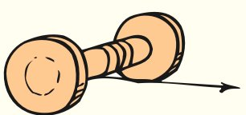
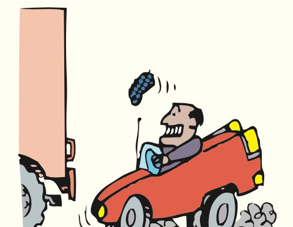
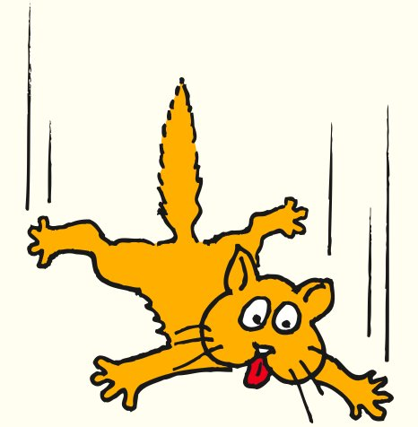
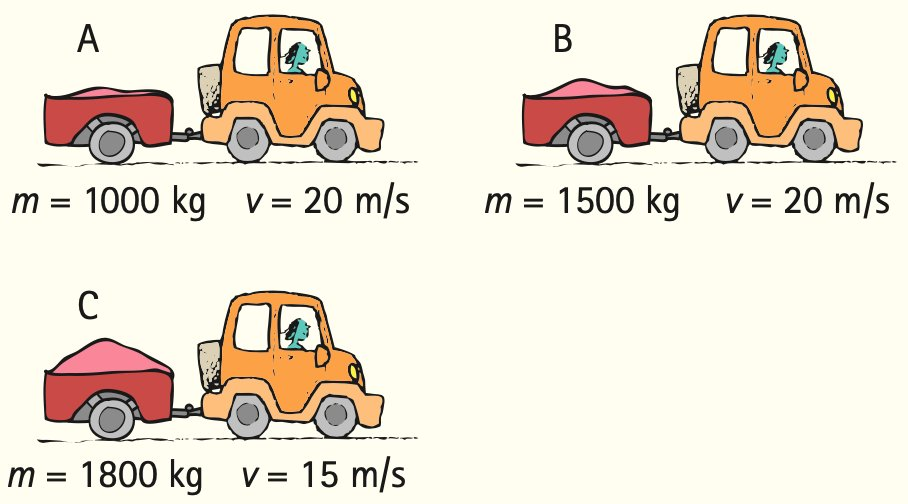
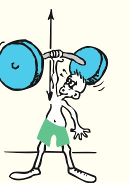
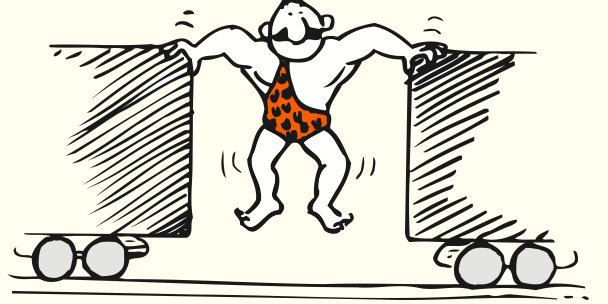
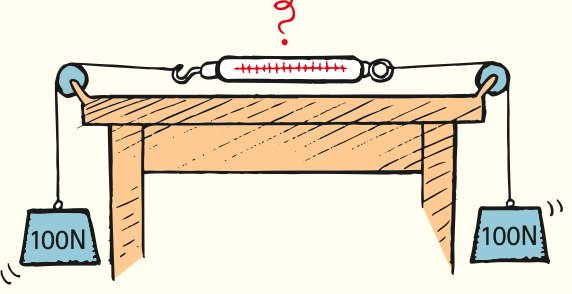

Chapter 4 Review
Summary of Terms (Knowledge)
- Force
- Any push or pull exerted on an object, measured in newtons (or pounds in the British system).
- Friction
- The resistive force that opposes the motion or attempted motion of an object either past another object with which it is in contact or through a fluid.
- Mass
- The quantity of matter in an object. More specifically, it is the measure of the inertia or sluggishness that an object exhibits in response to any effort made to start it, stop it, deflect it, or change in any way its state of motion.
- Weight
- The force upon an object due to gravity, mg. (More generally, the force that an object exerts on a means of support.)
- Kilogram
- The fundamental SI unit of mass. One kilogram (symbol kg) is the mass of 1 liter (1 L) of water at 4°C.
- Newton
- The SI unit of force. One newton (symbol N) is the force that will give an object of mass 1 kg an acceleration of 1 m/s2.
- Volume
- The quantity of space an object occupies.
- Newton’s second law
- The acceleration of an object is directly proportional to the net force acting on the object, is in the direction of the net force, and is inversely proportional to the mass of the object.
- Free fall
- Motion under the influence of gravitational pull only.
- Terminal speed
- The speed at which the acceleration of a falling object terminates because air resistance balances gravitational force.
- Terminal velocity
- Terminal speed with direction specified.
Reading Check Questions (Comprehension)
4.1 Force Causes Acceleration
- Is acceleration proportional to net force, or does acceleration equal net force?
4.2 Friction
- When you push horizontally on a crate on a level floor that doesn’t slide, how great is the force of friction on the crate?
- As you increase your push, will friction on the crate increase also?
- Once the crate is sliding, how hard do you push to keep it moving at constant velocity?
- Which is normally greater: static friction or sliding friction on the same object?
- How does the force of friction for a sliding object vary with speed?
- Does fluid friction vary with speed?
4.3 Mass and Weight
- Which is more fundamental: mass or weight? Which varies with location?
- Fill in the blanks: Shake something to and fro and you’re measuring its ________. Lift it against gravity and you’re measuring its ________.
- Fill in the blanks: The Standard International unit for mass is the ________. The Standard International unit for force is the ________.
- What is the approximate weight of a quarter-pound hamburger after it is cooked?
- What is the weight of a 1-kilogram brick resting on a table?
- In the string-pull illustration in Figure 4.8, a gradual pull of the lower string results in the top string breaking. Does this occur because of the ball’s weight or its mass?
- In the string-pull illustration in Figure 4.8, a sharp jerk on the bottom string results in the bottom string breaking. Does this occur because of the ball’s weight or its mass?
- Is acceleration directly proportional to mass, or is it inversely proportional to mass? Give an example.
4.4 Newton’s Second Law of Motion
- State Newton’s second law of motion.
- If we say that one quantity is directly proportional to another quantity, does this mean they are equal to each other? Explain briefly, using mass and weight as an example.
- If the net force acting on a sliding block is somehow tripled, what happens to the acceleration?
- If the mass of a sliding block is tripled while a constant net force is applied, by how much does the acceleration change?
- If the mass of a sliding block is somehow tripled at the same time the net force on it is tripled, how does the resulting acceleration compare with the original acceleration?
- How does the direction of acceleration compare with the direction of the net force that produces it?
4.5 When Acceleration Is g—Free Fall
- What is the condition for an object experiencing free fall?
- The ratio circumference/diameter for all circles is π. What is the ratio force/mass for freely falling bodies?
- Why doesn’t a heavy object accelerate more than a light object when both are freely falling?
4.6 When Acceleration Is Less Than g—Nonfree Fall
- What is the net force that acts on a 10-N freely falling object?
- What is the net force that acts on a 10-N falling object when it encounters 4 N of air resistance? 10 N of air resistance?
- What two principal factors affect the force of air resistance on a falling object?
- What is the acceleration of a falling object that has reached its terminal velocity?
- Why does a heavy parachutist fall faster than a lighter parachutist who wears a parachute of the same size?
- If two objects of the same size fall through the air at different speeds, which encounters the greater air resistance?
Think and Do (Hands-on Application)
- Write a letter to Grandma and tell her what you’ve learned about Galileo, introducing the concepts of acceleration and inertia. State that he was familiar with forces but didn’t see their connection to acceleration and mass. Tell her how Isaac Newton did see the connection and how it explains why heavy and light objects in free fall gain the same speed in the same time. In this letter, it’s okay to use an equation or two, as long as you make it clear to Grandma that an equation is a shorthand notation of ideas you’ve explained.
- Drop a sheet of paper and a coin at the same time. Which reaches the ground first? Why? Now crumple the paper into a small, tight wad and again drop it with the coin. Explain the difference observed. Will they fall together if dropped from a second-, third-, or fourth-story window? Try it and explain your observations.
- Drop a book and a sheet of paper, and you’ll see that the book has a greater acceleration—g. Repeat, but place the paper beneath the book so that it is forced against the book as both fall, so both fall equally at g. How do the accelerations compare if you place the paper on top of the raised book and then drop both? You may be surprised, so try it and see. Then explain your observation.
- Drop two balls of different masses from the same height, and, at low speeds, they practically fall together. Will they roll together down the same inclined plane? If each is suspended from an equal length of string, making a pair of pendulums, and displaced through the same angle, will they swing back and forth in unison? Try it and see; then explain using Newton’s laws.
- The net force acting on an object and the resulting acceleration are always in the same direction. You can demonstrate this with a spool. If the spool is gently pulled horizontally to the right, in which direction will it roll?

Plug and Chug (Equation Familiarization)
Make these simple one-step calculations and familiarize yourself with the equations that link the concepts of force, mass, and acceleration.
Weight = mg
- Calculate the weight in newtons of a person who has a mass of 50 kg.
- Calculate the weight in newtons of a 2000-kg elephant.
- Calculate the weight in newtons of a 2.5-kg melon. What is its weight in pounds?
- A small apple weighs about 1 N. What is its mass in kilograms? What is its weight in pounds?
- Susie Small finds that she weighs 300 N. Calculate her mass.
Acceleration: a = Fnet / m
- Calculate the acceleration of a 2000-kg, single-engine airplane as it begins its takeoff with an engine thrust of 500 N. (The unit N/kg is equivalent to m/s2.)
- Calculate the acceleration of a 300,000-kg jumbo jet just before takeoff when the thrust on the aircraft is 120,000 N.
- Consider a 40-kg block of cement that is pulled sideways with a net force of 200 N. Show that its acceleration is 5 m/s2.
- In Chapter 3 acceleration is defined as a = Δv / Δt. Show that the acceleration of a cart on an inclined plane that gains 6.0 m/s every 1.2 s is 5.0 m/s2.
- In this chapter we learn that the cause of acceleration is given by Newton’s second law: a = Fnet / m. Show that the acceleration in the preceding problem results from a net force of 15 N exerted on a 3.0-kg cart.
- Knowing that a 1-kg object weighs 10 N, confirm that the acceleration of a 1-kg stone in free fall is 10 m/s2.
- A simple rearrangement of Newton’s second law gives Fnet = ma. Show that a net force of 84 N exerted on a 12-kg package is needed to produce an acceleration of 7.0 m/s2.
Think and Solve (Mathematical Application)
- One pound is the same as 4.45 newtons. What is the weight in pounds of 1 newton?
- If Lillian weighs 500 N, what is her weight in pounds?
- Consider a mass of 1 kg accelerated 1 m/s2 by a force of 1 N. Show that the acceleration would be the same for a force of 2 N acting on 2 kg.
- Consider a business jet of mass 30,000 kg in takeoff when the thrust for each of its two engines is 30,000 N. Show that its acceleration is 2 m/s2.
- Alex, who has a mass of 100 kg, is skateboarding at 9.0 m/s when he smacks into a brick wall and comes to a dead stop in 0.2 s.
- Show that his deceleration is 45 m/s2.
- Show that the force of impact is 4500 N. (Ouch!)
- A rock band’s tour bus, mass M, is accelerating away from a stop sign at rate a when a piece of heavy metal, mass M/5, falls onto the top of the bus and remains there.
- Show that the bus’ acceleration is now 5/6a.
- If the initial acceleration of the bus is 1.2 m/s2, show that when the bus carries the heavy metal with it, the acceleration will be 1.0 m/s2.
Think and Rank (Analysis)
- Boxes of various masses are on a friction-free, level table. Rank each of the following from greatest to least:
- Net forces on the boxes
- Accelerations of the boxes

- In all three cases, A, B, and C, the crate is in equilibrium (no acceleration). Rank them by the amounts of friction between the crate and the floor, from greatest to least.

- A 100-kg box of tools is in the locations A, B, and C. From greatest to least, rank the
- masses of the 100-kg box of tools.
- weights of the 100-kg box of tools.

- Three parachutists, A, B, and C, each have reached terminal velocity at the same distance above the ground below.
- From fastest to slowest, rank their terminal velocities.
- From longest to shortest, rank their times to reach the ground.

Think and Explain (Synthesis)
- You exert a force on a ball when you toss it upward. How long does that force last after the ball leaves your hand?
- On a long alley, a bowling ball slows down as it rolls. Is any horizontal force acting on the ball? How do you know?
- If a motorcycle moves with a constant velocity, can you conclude that there is no net force acting on it? How about if it’s moving with constant acceleration?
- Since an object weighs less on the surface of the Moon than on Earth’s surface, does it have less inertia on the Moon’s surface?
- Which contains more apples: a 1-pound bag of apples on Earth or a 1-pound bag of apples on the Moon? Which contains more apples: a 1-kilogram bag of apples on Earth or a 1-kilogram bag of apples on the Moon?
- If gold were sold by weight, would you rather buy it in Denver or in Death Valley? If it were sold by mass, which of these locations makes the best buy? Defend your answers.
- In an orbiting space vehicle, you are handed two identical boxes, one filled with sand and the other filled with feathers. How can you determine which is which without opening the boxes?
- Your empty hand is not hurt when it bangs lightly against a wall. Why does it hurt if you’re carrying a heavy load? Which of Newton’s laws is most applicable here?
- Does the mass of an astronaut change when he or she is visiting the International Space Station? Defend your answer.
- Why is a massive cleaver more effective for chopping vegetables than an equally sharp knife?
- When a junked car is crushed into a compact cube, does its mass change? Its weight? Explain.
- Gravity on the surface of the Moon is only 1/6 as strong as gravity on Earth. What is the weight of a 10-kg object on the Moon and on Earth? What is its mass on each?
- What happens to the weight reading on a scale you stand on when you toss a heavy object upward?
- What weight change occurs when your mass increases by 2 kg?
- What is your own mass in kilograms? Your weight in newtons?
- A grocery bag can withstand 300 N of force before it rips apart. How many kilograms of apples can it safely hold?
- A crate remains at rest on a factory floor while you push on it with horizontal force F. What is the friction force exerted on the crate by the floor? Explain.
- Explain how Newton’s first law of motion can be considered to be a consequence of Newton’s second law.
- When a car is moving in reverse, backing from a driveway, the driver applies the brakes. In what direction is the car’s acceleration?
- The auto in the sketch moves forward as the brakes are applied. A bystander says that during the interval of braking, the auto’s velocity and acceleration are in opposite directions. Do you agree or disagree?

- Aristotle claimed that the speed of a falling object depends on its weight. We now know that objects in free fall, whatever the gravitational forces on them, undergo the same gain in speed. Why don’t differences in their gravitational forces affect their accelerations?
- When blocking in football, a defending lineman often attempts to get his body under the body of his opponent and push upward. What effect does this have on the friction force between the opposing lineman’s feet and the ground?
- A race car travels along a raceway at a constant velocity of 200 km/h. What horizontal net force acts on the car?
- Free fall is motion in which gravity is the only force acting. (a) Is a skydiver who has reached terminal speed in free fall? (b) Is a satellite above the atmosphere that circles Earth in free fall?
- When a coin is tossed upward, what happens to its velocity while ascending? Its acceleration? (Ignore air resistance.)
- How much force acts on a tossed coin when it is halfway to its maximum height? How much force acts on it when it reaches its peak? (Ignore air resistance.)
- What is the acceleration of a rock at the top of its trajectory when it has been thrown straight upward? (Is your answer consistent with Newton’s second law?)
- A friend says that, as long as a car is at rest, no forces act on it. What do you say if you’re in the mood to correct the statement of your friend?
- When your car moves along the highway at constant velocity, the net force on it is zero. Why, then, do you have to keep running your engine?
- What is the net force on a small 1-N apple when you hold it at rest above your head? What is the net force on it after you release it?
- A “shooting star” is usually a grain of sand from outer space that burns up and gives off light as it enters the atmosphere. What exactly causes this burning?
- A parachutist, after opening her parachute, finds herself gently floating downward, no longer gaining speed. She feels the upward pull of the harness, while gravity pulls her down. Which of these two forces is greater? Or are they equal in magnitude?
- How does the force of gravity on a raindrop compare with the air drag the drop encounters when it falls at constant velocity?
- When a parachutist opens her parachute after reaching terminal speed, in what direction does she accelerate?
- How does the terminal speed of a parachutist before opening a parachute compare to the terminal speed afterward? Why is there a difference?
- How does the gravitational force on a falling body compare with the air resistance it encounters before it reaches terminal velocity? After reaching terminal velocity?
- Why does a cat that accidentally falls from the top of a 50-story building hit a safety net below no faster than if it fell from the 20th story?

- Under what conditions would a metal sphere dropping through a viscous liquid be in equilibrium?
- When and if Galileo dropped two balls of the same size but different masses from the top of the Leaning Tower of Pisa, air resistance was not really negligible. Which ball actually struck the ground first? Why?
- A regular tennis ball and another filled with lead pellets are dropped at the same time from the top of a building. Which one hits the ground first? Which one experiences greater air resistance? Defend your answers.
- In the absence of air resistance, if a ball is thrown vertically upward with a certain initial speed, on returning to its original level it will have the same speed. When air resistance is a factor, will the ball be moving faster, the same, or more slowly than its throwing speed when it gets back to the same level? Why? (Physicists often use the “principle of exaggeration” to help them analyze a problem. Consider the exaggerated case of a feather, not a ball, because the effect of air resistance on the feather is more pronounced and therefore easier to visualize.)
- If a ball is thrown vertically into the air in the presence of air resistance, would you expect the time during which it rises to be longer or shorter than the time during which it falls? (Again use the principle of exaggeration.)
- Make up two multiple-choice questions that would check a classmate’s understanding of the distinction between mass and weight.
Think and Discuss (Evaluation)
- Discuss whether or not the velocity of an object can reverse direction while maintaining a constant acceleration. If so, give an example; if not, provide an explanation.
- Discuss whether or not a stick of dynamite contains force. In your discussion make the distinction between contain and exert.
- Is it possible to move in a curved path in the absence of a force? Discuss why.
- An astronaut drops an overhead rock on the Moon. Discuss what force(s) act(s) on the rock as it drops.
- Does a dieting person seek to lose mass or lose weight?
- Consider a heavy crate resting on the bed of a flatbed truck. When the truck accelerates, the crate also accelerates and remains in place. Identify and discuss the force that accelerates the crate.
- Three identical blocks are pulled, as shown, on a horizontal frictionless surface. If the tension in the rope held by the hand is 30 N, discuss what is the tension in the other ropes.

- To pull a wagon across a lawn with constant velocity, you have to exert a steady force. Discuss and reconcile this fact with Newton’s first law, which says that motion with constant velocity requires no force.
- A common saying goes, “It’s not the fall that hurts you; it’s the sudden stop.” Translate this into Newton’s laws of motion.
- Sketch the path of a ball tossed vertically into the air. (Ignore air resistance.) Draw the ball halfway to the top, at the top, and halfway down to its starting point. Draw a force vector on the ball in all three positions. Are the vectors the same or different in the three locations? Are the accelerations the same or different in the three locations?
- As you leap upward in a standing jump, how does the force that you exert on the ground compare with your weight?
- When you jump vertically off the ground, what is your acceleration when you reach your highest point? Discuss this in light of Newton’s second law.
- Discuss whether or not a falling object increases in speed when its acceleration of fall decreases.
- What is the net force acting on a 1-kg ball in free fall?
- What is the net force acting on a falling 1-kg ball if it encounters 2 N of air resistance?
- A discussion partner says that, before the falling ball in the preceding exercise reaches terminal velocity, it gains speed while its acceleration decreases. Do you agree or disagree? Defend your answer.
- Explain to others whether or not a sheet of paper falls more slowly than one that is wadded into a ball.
- Upon which will air resistance be greater: a sheet of paper falling or the same sheet of paper wadded into a ball falling at a faster terminal speed? (Careful!)
- Suppose you hold a Ping-Pong ball and a golf ball at arm’s length and drop them simultaneously. You’ll see them hit the floor at about the same time. But, if you drop them off the top of a high ladder, you’ll see the golf ball hit first. Explain.
- A 400-kg bear grasping a vertical tree slides down at constant velocity. What is the friction force that acts on the bear? Discuss how “constant velocity” is the key to your answer.
- When skydiver Nellie opens her parachute, the air drag pushing the chute upward is stronger than Earth’s force of gravity pulling her downward. A friend says this means she should start moving upward. Discuss with your friend why this isn’t so, and what does happen.
Chapter 5 Review
Summary of Terms (Knowledge)
- Newton’s third law
- Whenever one object exerts a force on a second object, the second object exerts an equal and opposite force on the first.
- Components
- Mutually perpendicular vectors, usually horizontal and vertical, whose vector sum is a given vector.
Reading Check Questions (Comprehension)
5.1 Forces and Interactions
- When you push against a wall with your fingers, they bend because they experience a force. Identify this force.
- A boxer can hit a heavy bag with great force. Why can’t he hit a piece of tissue paper in midair with the same amount of force?
- How many forces are required for an interaction?
5.2 Newton’s Third Law of Motion
- State Newton’s third law of motion.
- Consider hitting a baseball with a bat. If we call the force on the bat against the ball the action force, identify the reaction force.
- If the system of Figure 5.9 is only the orange, is there a net force on the system when the apple pulls?
- If the system is considered to be the apple and the orange together (Figure 5.10), is there a net force on the system when the apple pulls (ignoring friction with the floor)?
- To produce a net force on a system, must there be an externally applied net force?
- Consider the system of a single football. If you kick it, is there a net force to accelerate the system? If a friend kicks it at the same time with an equal and opposite force, is there a net force to accelerate the system?
5.3 Action and Reaction on Different Masses
- Earth pulls down on you with a gravitational force that you call your weight. Do you pull up on Earth with the same amount of force?
- If the forces that act on a cannonball and the recoiling cannon from which it is fired are equal in magnitude, why do the cannonball and cannon have very different accelerations?
- Identify the force that propels a rocket.
- How does a helicopter get its lifting force?
- Can you physically touch a person without that person touching you with the same amount of force?
5.4 Vectors and the Third Law
- What is meant by the term vector resolution?
- What happens to the magnitude of the normal vector on a block resting on an incline when the angle of the incline increases?
- How great is the force of friction acting on a shoe at rest on an incline compared with the resultant of the vectors mg and N?
- How does the magnitude of the vertical component of velocity for a ball tossed at an upward angle change as the ball travels upward? How about the horizontal component of velocity when air resistance is negligible?
5.5 Summary of Newton’s Three Laws
- Fill in the blanks: Newton’s first law is often called the law of ________; Newton’s second law is the law of ________; and Newton’s third law is the law of ________ and ________.
- Which of Newton’s three laws focuses on interactions?
Think and Do (Hands-On Application)
- Hold your hand like a flat wing outside the window of a moving automobile. Then slightly tilt the front edge upward and notice the lifting effect. Can you see Newton’s laws at work here?
- Try pushing your fingers together. Can you push harder on one finger than the other finger?
Plug and Chug (Equation Familiarization)
- Calculate the resultant of the pair of velocities 100 km/h north and 75 km/h south. Calculate the resultant if both of the velocities are directed northward.
- Calculate the magnitude of the resultant of a pair of 100-km/h velocity vectors that are at right angles to each other.
- Calculate the resultant of a horizontal vector with a magnitude of 4 units and a vertical vector with a magnitude of 3 units.
- What will be the speed of an airplane that normally flies at 200 km/h when it encounters a 80-km/h wind from the side (at a right angle to the airplane).
Resultant of two vectors at right angles to each other:
R = √(X2 + Y2)
Think and Solve (Mathematical Application)
- A boxer punches a sheet of paper in midair and brings it from rest up to a speed of 25 m/s in 0.05 s. (a) What acceleration is imparted to the paper? (b) If the mass of the paper is 0.003 kg, what force does the boxer exert on it? (c) How much force does the paper exert on the boxer?
- If you stand next to a wall on a frictionless skateboard and push the wall with a force of 40 N, how hard does the wall push on you? If your mass is 80 kg, show that your acceleration is 0.5 m/s2.
- Forces of 3.0 N and 4.0 N act at right angles on a block of mass 2.0 kg. Show that the acceleration of the block is 2.5 m/s2.
- When two identical air pucks with repelling magnets are held together on an air table and then released, they end up moving in opposite directions at the same speed, v. Assume the mass of one of the pucks is doubled and the procedure is repeated.
- From Newton’s third law, show that the final speed of the double-mass puck is half that of the single puck.
- Calculate the speed of the double-mass puck if the single puck moves away at 0.4 m/s.
Think and Rank (Analysis)
- A van exerts a force on trailers of different masses m. Compared with the force exerted on each trailer, rank the magnitudes of the forces each trailer exerts on the van. (Or are all pairs of forces equal in magnitude?)

- Each of these boxes is pulled by the same force F to the left. All boxes have the same mass and slide on a friction-free surface. Rank the following from greatest to least:
- The accelerations of the boxes
- The tensions in the ropes connected to the single boxes to the right in B and in C

- Three identical pucks, A, B, and C, are sliding across ice at the given speeds. The forces of air and ice friction are negligible.
- Rank the pucks by the force needed to keep them moving, from greatest to least.
- Rank the pucks by the force needed to stop them in the same time interval, from greatest to least.

Think and Explain (Synthesis)
- For each of the following interactions, identify action and reaction forces: (a) A hammer hits a nail. (b) Earth gravity pulls down on a book. (c) A helicopter blade pushes air downward.
- The photo shows Steve Hewitt and daughter Gretchen. Is Gretchen touching her dad, or is her dad touching her? Explain.
Think and Explain 35 image was omitted because no matching captured image was supplied.
- When you rub your hands together, can you push harder on one hand than the other?
- You hold an apple over your head. (a) Identify all the forces acting on the apple and their reaction forces. (b) When you drop the apple, identify all the forces acting on it as it falls and the corresponding reaction forces. Ignore air drag.
- Identify the action–reaction pairs of forces for the following situations: (a) You step off a curb. (b) You pat your tutor on the back. (c) A wave hits a rocky shore.
- Consider a baseball player batting a ball. Identify the action–reaction pairs (a) when the ball is being hit and (b) while the ball is in flight.
- What physics is involved for a passenger feeling pushed backward into the seat of an airplane when it accelerates along the runway during takeoff?
- If you drop a rubber ball on the floor, it bounces back up. What force acts on the ball to provide the bounce?
- Within a book on a table, there are billions of forces pushing and pulling on all the molecules. Why is it that these forces never by chance add up to a net force in one direction, causing the book to accelerate “spontaneously” across the table?
- If you exert a horizontal force of 200 N to slide a crate across a factory floor at constant velocity, how much friction is exerted by the floor on the crate? Is the force of friction equal and oppositely directed to your 200-N push? If the force of friction isn’t the reaction force to your push, what is?
- When the athlete holds the barbell overhead, the reaction force is the weight of the barbell on his hand. How does this force vary for the case in which the barbell is accelerated upward? Downward?

- Consider the two forces acting on the person who stands still—namely, the downward pull of gravity and the upward support of the floor. Are these forces equal and opposite? Do they form an action–reaction pair? Why or why not?

- Why can you exert greater force on the pedals of a bicycle if you pull up on the handlebars?
- Why does a rope climber pull downward on the rope to move upward?
- You push a heavy car by hand. The car, in turn, pushes back with an opposite but equal force on you. Doesn’t this mean that the forces cancel each other, making acceleration impossible? Why or why not?
- The strong man will push the two initially stationary freight cars of equal mass apart before he himself drops straight to the ground. Is it possible for him to give either of the cars a greater speed than the other? Why or why not?

- Suppose that two carts, one twice as massive as the other, fly apart when the compressed spring that joins them is released. What is the acceleration of the heavier cart relative to that of the lighter cart as they start to move apart?

- If a Mack truck and Honda Civic have a head-on collision, upon which vehicle is the impact force greater? Which vehicle experiences the greater deceleration? Explain your answers.
- Ken and Joanne are astronauts floating some distance apart in space. They are joined by a safety cord whose ends are tied around their waists. If Ken starts pulling on the cord, will he pull Joanne toward him, or will he pull himself toward Joanne, or will both astronauts move? Explain.
- Which team wins in a tug-of-war: the team that pulls harder on the rope or the team that pushes harder against the ground? Explain.
- In a tug-of-war between Sam and Maddy, each pulls on the rope with a force of 250 N. What is the tension in the rope? If both remain motionless, what horizontal force does each exert against the ground?
- Your instructor challenges you and your friend to each pull on a pair of scales attached to the ends of a horizontal rope, in tug-of-war fashion, so that the readings on the scales will differ. Can this be done? Explain.

- Two people of equal mass attempt a tug-of-war with a 12-m rope while standing on frictionless ice. When they pull on the rope, each of them slides toward the other. How do their accelerations compare, and how far does each person slide before they meet?
- What aspect of physics was not known by the writer of this newspaper editorial that ridiculed early experiments by Robert H. Goddard on rocket propulsion above Earth’s atmosphere? “Professor Goddard . . . does not know the relation of action to reaction, and of the need to have something better than a vacuum against which to react . . . he seems to lack the knowledge ladled out daily in high schools.”
- Why does vertically falling rain make slanted streaks on the side windows of a moving automobile? If the streaks make an angle of 45°, what does this tell you about the relative speeds of the car and the falling rain?
- A balloon floats motionless in the air. A balloonist begins climbing the supporting cable. In which direction does the balloon move as the balloonist climbs? Defend your answer.
- There are two interactions that involve a stone at rest on the ground. One is between the stone and Earth as a whole: Earth pulls down on the stone (mg) and the stone pulls up on Earth. What is the other interaction?
- A stone is shown at rest on the ground. (a) The vector shows the weight of the stone. Complete the vector diagram showing another vector that results in zero net force on the stone. (b) What is the conventional name of the vector you have drawn?

- A stone is suspended at rest by a string. (a) Draw force vectors for all the forces that act on the stone. (b) Should your vectors have a zero resultant? (c) Why or why not?

- The same stone is being accelerated vertically upward. (a) Draw force vectors to some suitable scale showing relative forces acting on the stone. (b) Which is the longer vector, and why?

- Suppose the string in the preceding exercise breaks and the stone slows in its upward motion. Draw a force vector diagram of the stone when it reaches the top of its path.
- What is the acceleration of the stone of the preceding question at the top of its path?
- Here the stone is sliding down a friction-free incline. (a) Identify the forces that act on it, and draw appropriate force vectors. (b) Use the parallelogram rule to construct the resultant force on the stone (carefully showing that it has a direction parallel to the incline—the same direction as the stone’s acceleration).

- The stone is at rest, interacting with both the surface of the incline and the block. (a) Identify all the forces that act on the stone, and draw appropriate force vectors. (b) Show that the net force on the stone is zero. (Hint 1: There are two normal forces on the stone. Hint 2: Be sure the vectors you draw are for forces that act on the stone, not by the stone on the surfaces.)

- In Figure 5.25 how does the magnitude of f relate to the vector sum of mg and N when the shoe is in equilibrium? What occurs if f is less than this sum?
- Refer to Monkey Mo in Figure 5.26. If the rope makes an angle of 45° with the vertical, how will the magnitudes of vectors S and mg compare?
- Refer to Monkey Mo in Figure 5.26. What will be the magnitude of vector S if the rope that supports Mo is vertical? If the rope were horizontal, how would vector S be different? Why can’t both vectors T and S be horizontal?
- A girl tosses a ball upward in Figure 5.27. If air drag is negligible, how does the horizontal component of velocity relate to Newton’s first law of motion?
- As a tossed ball sails through the air, a force of gravity mg acts on it. Identify the reaction to this force. Also identify the acceleration of the ball along its path, even at the top of its path.
Think and Discuss (Evaluation)
- A rocket becomes progressively easier to accelerate as it travels through space. Discuss why is this so. (Hint: About 90% of the mass of a newly launched rocket is fuel.)
- When you kick a football, what action and reaction forces are involved? Which force, if either, is greater?
- Is it true that when you drop from a branch to the ground below, you pull upward on Earth? If so, then why isn’t the acceleration of Earth noticed?
- Two 100-N weights are attached to a spring scale as shown. Does the scale read 0, 100 N, or 200 N, or does it give some other reading? (Hint: Would the reading be different if one of the ropes were tied to the wall instead of to the hanging 100-N weight?)

- Does a baseball bat slow down when it hits a ball? Discuss and defend your answer.
- A baseball bat is swung against a baseball, which accelerates. When the ball is caught, what produces the force on the player’s glove?
- A farmer urges his horse to pull a wagon. The horse refuses, saying that to try would be futile because it would flout Newton’s third law. The horse concludes that she can’t exert a greater force on the wagon than the wagon exerts on her and, therefore, that she won’t be able to accelerate the wagon. Discuss your reasoning to convince the horse to pull.
- The strong man can withstand the tension force exerted by the two horses pulling in opposite directions. How would the tension compare if only one horse pulled and the left rope were tied to a tree? How would the tension compare if the two horses pulled in the same direction, with the left rope tied to the tree?